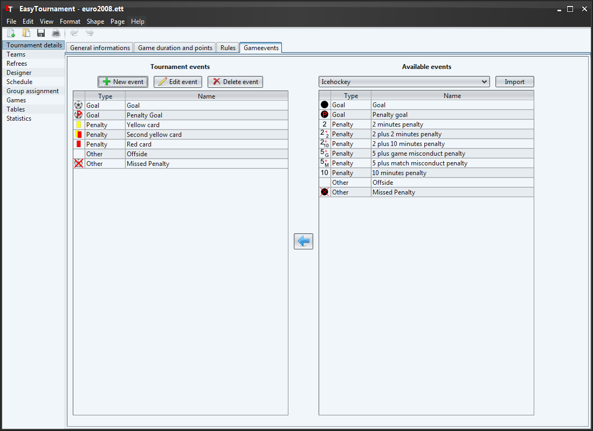
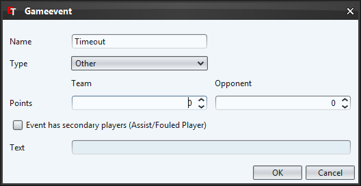
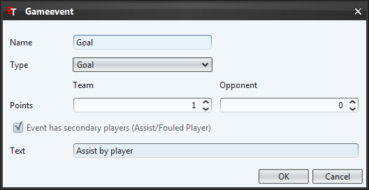

This screen allows you to define game events which later on can be selected in the game reports and evaluated in the statistic screen (e.g. scorer list).
With the drop-down list on the right side you can switch between the sports. If you have created some events in another tournament you can import them with the import button.
You can move the game events by drag an drop to your tournament (left side) or you can use the arrow button. To delete an event click on the delete button or press the delete key.
|  |  |
| New game event | Edit game event |
The name of the event (e.g. Goal, Offside, ...). If you edit a default event the name is not editable to preserve the translation property. Events created by yourself will be show with the same name in every language.
Category of the event: Goal, Penalty or Other
Number of points that this event counts (e.g. 1 for a goal in soccer or 6 for a touchdown in Football).
For some events so called secondary players are interesting. E.g. in icehockey you would like to know how many assists a player scored to create a scorer list. Or maybe you would like to know which player has been fouled the most in soccer.